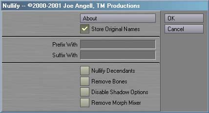

|
To install Nullify, just follow these steps:
 To use Nullify, you must first select the objects you want to convert to nulls. All selected objects will be nullified. Once you have selected the appropriate objects, launch Nullify. You should see an interface simlar to the one shown above. The About button, as you'd expect, presents information about the plug-in. All of the settings in the interface are optional. If you don't want to use them, just click OK to continue. In this default state, all the selected objects will simply be converted into nulls. If Store Original Names is checked, the original object name will be stored as a tag in the scene file. You van view tags with the Comments Generic plug-in included with Lightwave. Nullify writes tags that are compatible with Replace Objects, allowing you to use the Replace With Original Object plug-in to reload the original item. The tag starts with the keyword "OriginalItem", then a 0 if it was a null or a 1 if it was an object, and finally the path to the object, or the original name of the null object. If this tag already exists for this object, it will be replaced with the new tag. If this option is left unchecked, then no tags will be modified or created.You can add a prefix or a suffix to the object's name after it has been converted to a null via the Prefix and Suffix fields. The new null object's name will start with the prefix, then contain the original object name, and finally end in the suffix. If Nullify Descendants is enabled, then all children of the selected items will also be converted to nulls using the panel's settings When Remove Bones is enabled, any bones in the nullified objects will be cleared. In most cases the bones are no longer nessesary once the object has become a null. However, there are cases where expressions, plug-ins or Use Bones From Object, where you may want the bones to remain If Disable Shadow Options is enabled, the Cast Shadow, Receive Shadow and Self Shadow options are disabled. This has been reported to reduce render times, even on nulls. Remove Moprh Mixer will remove any instances of Morph Mixer applied to any of the objects being nullified if checked. Clicking OK will use the settings in the panel to convert objects into nulls. It will also store the interface settings until Layout is quit, allowing you to quickly nullify smaller groups of objects successivly. Cancel will exit Nullify without performing any changes to your scene. Revision History
Bugs? Feature requests? Can't get it to work? Feel free to contact us if you're having any problems or want to request a feature.
All programs presented here are Copyright ©2000-2001 TM Productions, All Rights Reserved. Please contact us if you would like to distribute any of these programs, or if you find any particularly useful. |